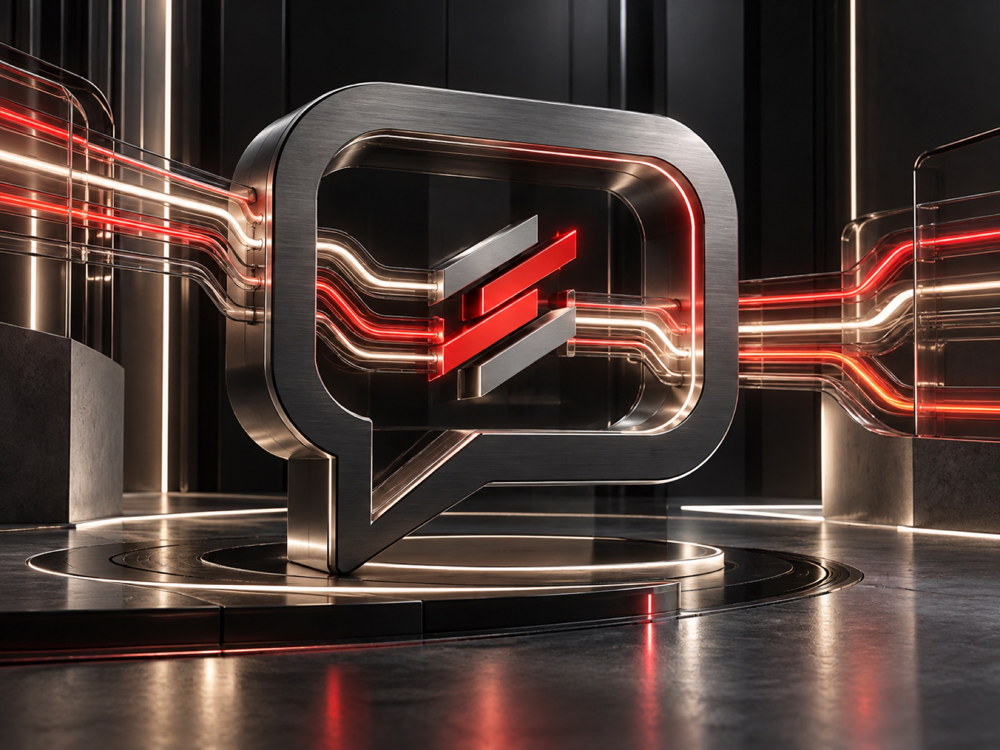

Messaging workflows
Structure communication as part of a defined business process.

Systemiza / Solution 03
Role / Message

Messagiza is designed to support reliable, scalable customer communication through a structured business messaging approach.
Messagiza provides the business messaging layer within Systemiza: connecting business systems, communication routing and customer interaction.
03 Conceptual sequence
A conceptual view of communication moving from a business system to an intended customer interaction.
A communication need begins within a business workflow.
The relevant communication is prepared.
The message follows the configured business path.
Communication reaches the intended touchpoint.
System capabilities / 03
Structure communication as part of a defined business process.
Connect communication intent with the appropriate workflow path.
Support a clearer model for ongoing business messaging activity.
Business outcomes
A more coherent operating model for customer messaging.
A structured approach for changing communication demand.
Designed to fit alongside APIs, CRM systems, web, mobile and business platforms.
Supports communication after verification and alongside notifications and campaigns.
Messagiza / Business messaging
Discuss how Messagiza could support your communication architecture.
Request a Demo